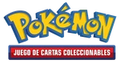
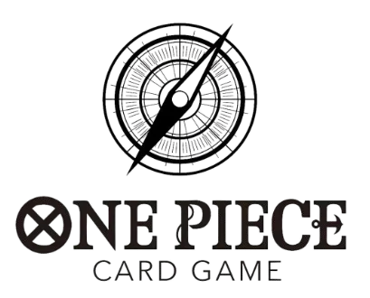
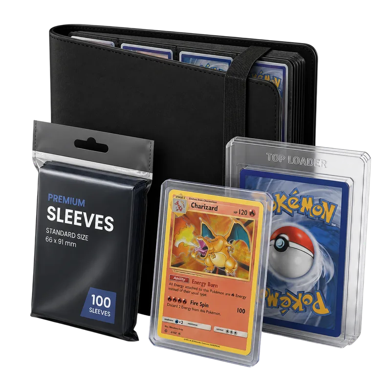

Todo el stock disponible ahora mismo: sobres, expositores, colecciones y más.

PróximamenteEstamos preparando el rastreo de stock de One Piece Card Game — vuelve pronto.

Fundas, cajas y álbumes disponibles ahora mismo.
Los productos con mayor bajada de precio en este momento.
Todavía no hay noticias publicadas — vuelve pronto.
Una web que vigila en directo el stock de Pokémon TCG en Amazon España, Reino Unido, USA y El Corte Inglés, y avisa por Telegram en cuanto un producto vuelve a estar disponible o baja de precio.
Un bot revisa el stock cada pocos minutos. En cuanto un producto pasa a estar disponible (o disponible por invitación), se publica al momento en el canal de Telegram y se refleja aquí en la web.
Sí, en la sección Ofertas se muestran únicamente los productos con descuento activo en este momento, ordenados de mayor a menor rebaja.
Sí, fundas, cajas de almacenamiento y álbumes para cartas están disponibles en la sección Accesorios, actualizada a diario.
Sí, tanto la web como el canal de Telegram son completamente gratuitos. Los enlaces de compra son de afiliado de Amazon, sin coste extra para ti.